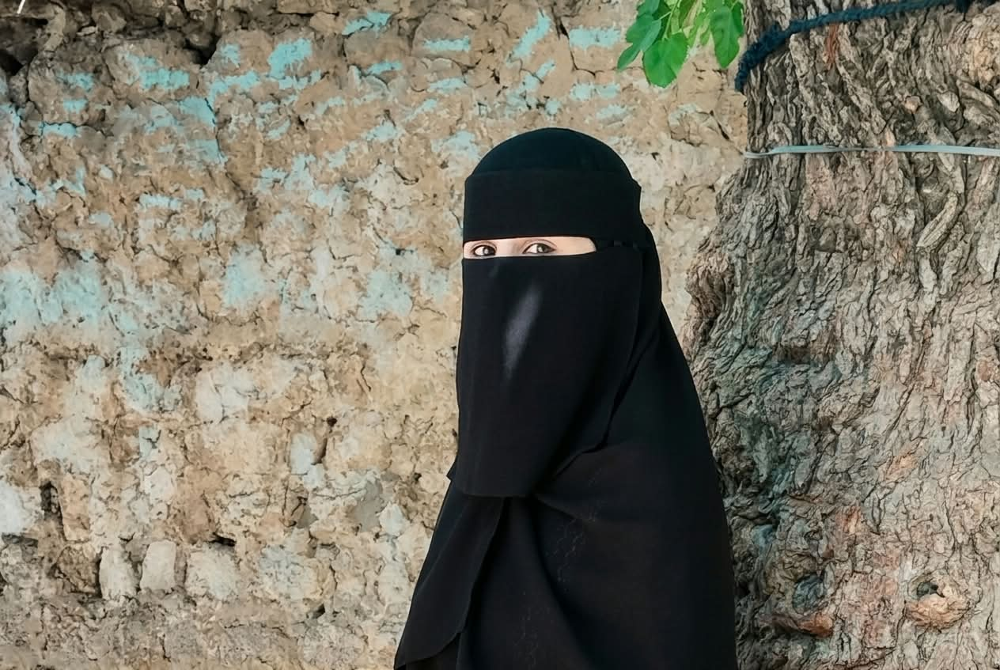

BS Computer Science Graduate
Sidra Mustafa
Aspiring Cloud & DevOps Engineer | AWS | Docker | Terraform | CI/CD Automation
I build and deploy cloud projects hands-on: provisioning AWS with Terraform, automating releases with GitHub Actions, and packaging apps with Docker. I’m looking for an entry-level Cloud or DevOps role where I can keep learning on real systems.

About me
I hold a Bachelor of Science in Computer Science from Hazara University (October 2022 to June 2026). Since July 2026 I have been teaching myself Cloud and DevOps through structured, hands-on practice, with a focus on AWS.
My practice covers Linux administration and Bash scripting, networking fundamentals, and Terraform for AWS resources such as VPCs, subnets, security groups, IAM roles and EC2, with remote state in Amazon S3. I build GitHub Actions workflows that authenticate to AWS using OpenID Connect, and I use Docker and Docker Hub to package applications.
I’m especially interested in infrastructure automation, deployment pipelines, blue-green deployment strategies and cloud security, including secrets handling with Secrets Manager and KMS. My goal is a junior Cloud, DevOps or Platform role where I can contribute to automation while growing under experienced engineers.
Technical skills
Skills listed on my CV. Labels show what I have practiced, not equal depth in every tool.
Projects
Independent learning projects. Repository links and diagrams are added as I publish them.
Experience and practical learning
Employment
Aspiring Cloud & DevOps Engineer
Currently building practical skills through independent AWS projects, infrastructure automation, and CI/CD pipelines.
Internships
No internships listed at this time.
Independent learning and projects
-
Cloud & DevOps self-directed learning and projects
- Practicing Linux administration: permissions, users and groups, processes, services and monitoring.
- Writing Bash scripts to automate common system administration tasks.
- Practicing networking fundamentals: IP addressing, ports, DNS, SSH, HTTP/HTTPS, routing and troubleshooting.
- Provisioning AWS infrastructure with Terraform, with remote state in S3, workspaces and environment-specific configuration.
- Building GitHub Actions CI/CD workflows with secure AWS authentication through OIDC.
- Building and publishing container images with Docker and Docker Hub.
- Practicing blue-green deployments, multi-environment management, deployment approvals and resource cleanup workflows.
Education
-
Bachelor of Science in Computer Science
Grade A · CGPA 3.82
Certifications and training
Completed
No professional certifications completed yet.
In progress
Self-directed Cloud & DevOps learning, focusing on:
- AWS cloud services and infrastructure
- Terraform and Infrastructure as Code (IaC)
- Docker and containerization
- GitHub Actions and CI/CD automation
- Linux and networking fundamentals
Resume / CV
My CV covers my education, hands-on Cloud & DevOps practice and technical skills.
Contact
The best way to reach me is by email or LinkedIn.
- Email sidra.minddecoders@gmail.com
- LinkedIn linkedin.com/in/sidrakhan13503
- GitHub github.com/minddecoders
- Docker Hub hub.docker.com/u/minddecoders